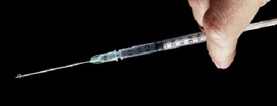
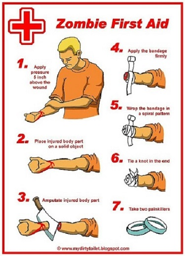

Click to slide down panel
Mmmmmm Brains!!

OUR SERVICES
At NEW WORLD HEALTH
we like to offer a service and to inform the living of some much needed advice when it comes to dealing with zombieism.
Our most recent step forward in the war against zombieism has been the joining of New World Health and Lincoln Laboratorys Chemical, Biological and Nanoscale Technologies Group. Lincoln Laboratorys Chemical, Biological and Nanoscale Technologies Group have invented a new drug that can identify cells infected by any type of virus and then kill them, thereby terminating the infection.
The drug has proven effective against dozens of viruses, including the common cold, influenza, the polio virus, and dengue fever. Senior team members say this could be a game changer:
Because the technology is so broad-spectrum, it could potentially also be used to combat outbreaks of new and unknown viruses, such as the 2003 SARS outbreak. In theory it should work against all viruses.
Because many experts theorize that the next great zombie plague will be caused by a virus, this new drug treatment could prevent global catastrophe when the dead rise. More research is needed, but initial results are promising to say the least.
ZOMBIEISM
Zombieism is believed to be contagious, usually spread through biting. In the case of Zombeism, the best cure is an ounce of prevention.
You really need to avoid getting a bite in the first place.
In the case of zombies that just shuffle along slowly, it shouldn't be too hard to outrun them (although they will respond well to Michael Jackson music and can move much faster when following choreography).
Feel free to defend yourself (best to aim for the head) and avoid getting scratched or bitten at all costs.
One problem with outrunning zombies is their extreme strength. Obstacles you must go around, they just go through. There are several theories on why zombies have such superhuman abilities despite the fact that they can't move very fast.
Most of the theories have to do with dramatic effect.

FIRST AID FOR ZOMBIE BITES
A few tricks to avoid being devoured by zombies;
1. Don't go outside when you hear screaming.
2. It's either the cheerleader getting bitten or a smart zombie trying to trick you.
3. Carry weapons. Things that explode should be readily available (although recent plot twists suggest sound attracts more zombies -- don't say I didn't warn you).
4. Never approach a "dead" body. Zombies are very good at faking death -- because they are dead -- and will jump up and eat you.
5. Zombies like to hang out with vampires, werewolves, witches, fairy princesses, ghosts, goblins and things that laugh maniacally in the dark so avoid those at all costs.
Of course, there are examples of very fast zombies
(and staying inside doesn't help much when zombies can just crash through the walls)
so outrunning or avoiding doesn't always work. In case you are bitten by a zombie, here's what to do:
*Wash the bite with soap and water (this won't help a zombie bite but I'm ethically obligated as a medical writer to tell you to wash everything with soap and water).
*If the bite is on an arm or leg, cut it off immediately (and treat the amputation). Maybe it won't spread.
*If the bite is on any other part of your body, say something clever especially if you have a camera solo and shuffle off to bite someone else.
ZOMBIE PROOFING CHECKLIST
In a war against zombies it is important to make provisions
and fortify yourself before engaging the enemy.
Make sure you have addressed each of these areas:
*Electrified Fence-At least 40 feet high.
*Windows-The sliding perspex bullet proof type, zombies can smash glass windows!
*Electric Generator-You will need power when the grid goes down.
*Non Perishible Food-The Supermarket isnt going to be open.
*Bottled water or water purifier-The water supply will quickly become tainted.
*Brick exterior-Zombies can tear through wood!
*Astroturf lawn-Always stays green even when covered in corpses.
*Acid Hose-Dont waste your bullets!